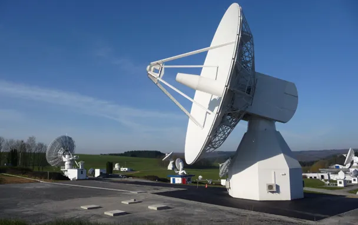
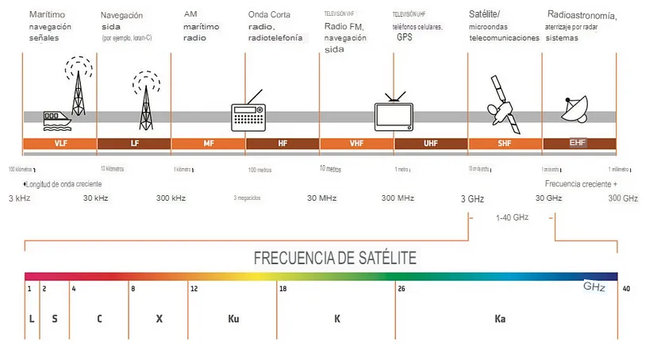
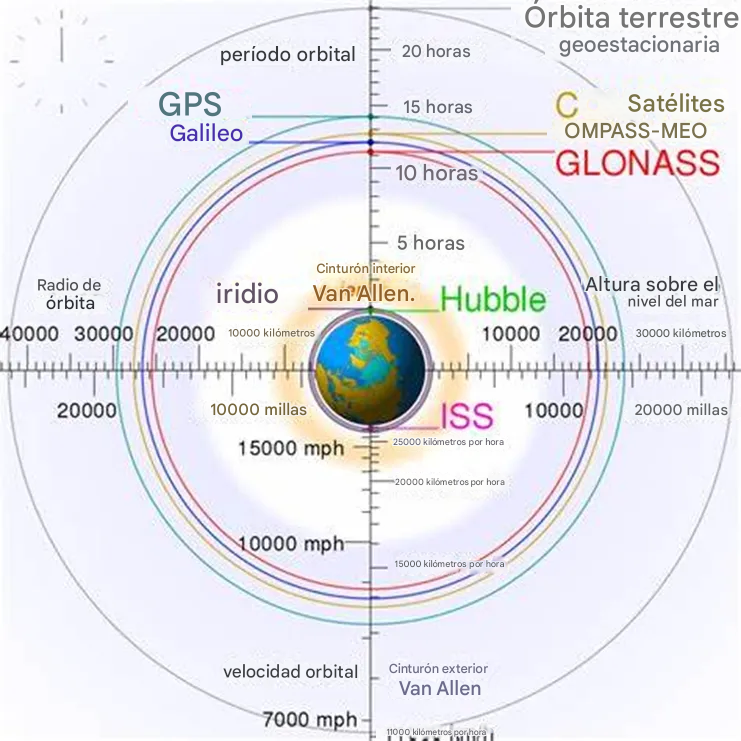
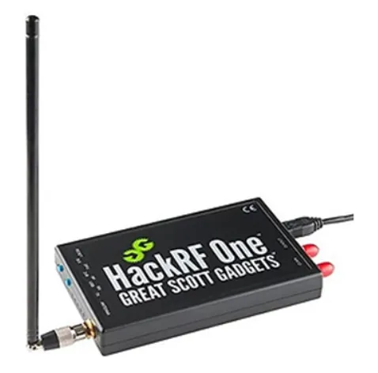

📡Funcionamiento de un satélite🛰️
Hoy vamos a ver algo súper interesante: algo que combina los satélites con mi entusiasmo de estudiante cibernético que no puede dejar de pensar en la seguridad. Entonces, ¿qué es exactamente un satélite? No se preocupen, no estoy aquí para aburrirlos con definiciones de libros de texto. Pero ¿alguna vez se preguntaron qué sucede si un satélite es hackeado?
Los satélites desempeñan un papel vital en el mundo interconectado de hoy, ya que alimentan Internet, la televisión, el GPS y las comunicaciones móviles en todo el mundo. Más allá del uso civil, también son esenciales para las operaciones militares, ya que brindan un apoyo fundamental para la vigilancia, la inteligencia de señales y la comunicación segura.
Sin embargo, muchos de estos satélites fueron diseñados antes de que la ciberseguridad se convirtiera en una preocupación importante, lo que los hace susceptibles a la piratería y a las interceptaciones de comunicaciones.

¿Hacia dónde se desplazan los satélites?
La mayoría de los satélites de los que dependemos son geocéntricos , es decir, orbitan alrededor de la Tierra. Pero ¿sabías que algunos van más allá? ¡Sí! Hay satélites que exploran Marte, Júpiter e incluso lo más desconocido. Pero centrémonos en los que mantienen conectado nuestro mundo.
Los satélites se clasifican según su altitud, o la distancia a la que se encuentran de la superficie de la Tierra. A continuación, se muestra un desglose:
1. Órbita terrestre baja (LEO) (600–2000 km) : Los satélites LEO manejan comunicaciones móviles, GPS, seguimiento meteorológico e incluso vigilancia militar. Con más de 2600 satélites activos (gracias a SpaceX y compañía), ¡esta región está repleta! Debido a que están cerca de la Tierra, sus señales viajan rápido, lo que los hace ideales para servicios en tiempo real como llamadas móviles e Internet. Pero con una vida útil de solo 5 a 8 años , necesitan reemplazos frecuentes, lo que los convierte en los más costosos de mantener.
2. Órbita terrestre media (MEO) (5000–20 000 km) : hogar de los satélites GPS y algunos sistemas de comunicación. Estos satélites tienen una vida útil más larga ( unos 12 años ) y necesitan menos unidades para cubrir todo el planeta (unos 10–15 satélites hacen el trabajo). Sin embargo, la señal aún tarda 125 ms en llegar a la Tierra, lo que los hace menos ideales para llamadas de voz.
Órbita terrestre geoestacionaria (GEO) (35.786 km) : estos satélites son como los VIP del espacio , ya que permanecen fijos en una ubicación. Esto los hace perfectos para televisión, radio y vigilancia. Duran hasta 15 años , pero ¿cuál es el inconveniente? Su retraso de 250 ms los hace terribles para llamadas telefónicas y comunicación en tiempo real. Además, se necesitan tres satélites para una cobertura global completa.
3. Órbita altamente elíptica (HEO) : estos satélites se mueven en una trayectoria elíptica, a veces acercándose a la Tierra como los LEO y otras veces alcanzando alturas MEO. A menudo se utilizan
para sistemas de alerta temprana, vigilancia militar y comunicaciones especializadas. Sin embargo, no son tan populares: ¡solo existen 59 satélites HEO!

Satélites y ciberseguridad
Los satélites alimentan todo, desde Internet, GPS y redes móviles hasta operaciones militares y espionaje . Pero lo más aterrador es que muchos de estos sistemas se construyeron antes de que la ciberseguridad fuera una preocupación importante. ¡Eso significa que es totalmente posible piratearlos!
Los satélites LEO, en particular, son objetivos prioritarios. ¿Por qué?
· Su baja altitud hace que sea más fácil llegar a ellos.
· Proporcionan comunicación y redes globales , ¡ideales para piratas informáticos que buscan espiar!
· Muchos todavía utilizan protocolos de cifrado y seguridad obsoletos .
Incluso los equipos de radio básicos disponibles comercialmente pueden interactuar a veces con los satélites LEO, lo que significa que alguien con las habilidades adecuadas puede interceptar señales, acceder a datos privados o incluso interrumpir servicios. Y seamos honestos: nadie quiere que secuestren su GPS o que le corten Internet, ¿verdad?
A medida que más actores ingresan al juego espacial, los satélites mal configurados o mal protegidos se vuelven más comunes, lo que aumenta el riesgo de ciberataques.
¿Hackear satélites?
Si cree que para hackear un satélite se necesita un laboratorio gubernamental de alto secreto, piénselo de nuevo. En 2020 , el investigador de ciberseguridad J. Pavur demostró en su artículo A Tale of Sea and Sky: On the Security of Maritime VSAT Communications (Una historia de mar y cielo: sobre la seguridad de las comunicaciones marítimas VSAT) que se necesitan solo 400 dólares en equipos para hackear un satélite que proporciona Internet a los cruceros. Sí, menos que el precio de un iPhone nuevo.
Y no son sólo los cruceros los que están en peligro: muchos servicios de redes satelitales, como los que ofrece la red Iridium , transmiten datos de clientes sin cifrar , lo que los convierte en blancos fáciles para los espías. Los investigadores de seguridad del Club de Computación del Caos de Múnich (MUCCC) ya han demostrado lo fácil que es interceptar estas señales desprotegidas.
¿Por qué son tan vulnerables los satélites?
1. No existen estándares de seguridad universales: a diferencia de los protocolos de ciberseguridad que tenemos para las redes de Internet, los satélites no siguen normas de seguridad estrictas . Muchos fabricantes recortan gastos para ahorrar, lo que deja grandes vulnerabilidades.
2. Tecnología obsoleta: la mayoría de los satélites se construyeron hace décadas y funcionan con software que no se puede actualizar de forma remota. Algunos incluso utilizan lenguajes de programación tan antiguos que encontrar ingenieros que los entiendan se está convirtiendo en un problema grave. ¡Incluso la NASA tiene dificultades para lograrlo!
3. Mayor vida útil, mayores riesgos: si bien los materiales modernos hacen que los satélites sean más duraderos , su software obsoleto sigue siendo una bomba de tiempo. A medida que los satélites en órbita terrestre baja (LEO) duran más, se convierten en objetivos de piratería aún más atractivos para los cibercriminales.
Con miles de satélites orbitando la Tierra (y cada año se lanzan más), comprender la ciberseguridad satelital es más importante que nunca. Un satélite comprometido no solo significa la pérdida de WiFi, sino que podría afectar las operaciones militares, la navegación global o incluso los mercados financieros.
Hackeando satélites LEO
Los satélites LEO (Low Earth Orbit) alimentan nuestra red de Internet, GPS, redes móviles e incluso operaciones militares. Pero aquí está el problema: no fueron construidos exactamente con la ciberseguridad en mente. Su proceso de fabricación implica una enorme cadena de suministro, con piezas que provienen de diferentes empresas. Eso significa que las vulnerabilidades pueden aparecer en cualquier etapa, desde el diseño y el lanzamiento hasta la operación y el control. ¿Y adivina qué? A los piratas informáticos les encanta ese tipo de caos.
A. Jamming: el atasco de tráfico espacial que nadie quiere
La interferencia es el equivalente cibernético de hacer sonar una fuerte interferencia estática en una señal de radio: satura las comunicaciones satelitales y provoca interrupciones, demoras o apagones totales . Esto puede ocurrir de dos formas principales:
Interferencia orbital: el atacante envía señales de alta frecuencia directamente al satélite , ahogando los comandos reales con pura interferencia. El satélite se confunde, pierde la comunicación y, ¡boom!, la misión se ve comprometida.
Interferencia terrestre : en lugar de atacar al satélite en sí, los atacantes interfieren las señales en las estaciones terrestres (las estaciones base que reciben datos de los satélites). ¿La buena noticia? Este método tiene un alcance limitado (3 a 20 km) , pero en la ubicación correcta, aún puede causar estragos.
Durante el conflicto entre Ucrania y Rusia , surgieron informes de que las fuerzas rusas interferían las señales GPS para interrumpir la navegación de los drones y vehículos militares. Sin GPS no hay ataques de precisión. Da miedo, ¿verdad?
B. Spoofing: La gran suplantación de identidad espacial
Mientras que el bloqueo bloquea las señales , la suplantación las falsifica . Imagine a un estafador que se hace pasar por su banco y lo engaña para que le dé su contraseña. Ahora, imagine eso... pero con satélites .
Un atacante imita las señales satelitales legítimas y envía comandos falsos. Si el satélite no tiene una autenticación fuerte , puede aceptar la señal maliciosa como real , lo que permite a los piratas informáticos:
Inyectar datos de navegación falsos (hola, misiles mal dirigidos y aviones perdidos)
Envíe comandos de control maliciosos (diga adiós a los protocolos de cifrado y seguridad).
Engañar a las estaciones terrestres para que procesen datos comprometidos (¿fuga de inteligencia, alguien?)
Algunos investigadores han demostrado incluso ataques de suplantación de identidad en sistemas GPS , lo que demuestra que un hacker bien ubicado podría falsificar las coordenadas del GPS y hacer creer a un barco o a un dron que está en medio del océano… cuando en realidad se dirige directamente a una zona restringida. ¡Uf!
C. Malware
Ahora bien, si pensaba que las interferencias y la suplantación de identidad eran malas, espere a oír hablar del malware en los satélites .
Dado que muchos satélites utilizan software obsoleto (algunos todavía funcionan con lenguajes de programación con décadas de antigüedad ), los piratas informáticos pueden inyectar código malicioso y tomar el control total de un satélite.
Programas de puerta trasera : los piratas informáticos instalan software oculto que les permite reconectarse en cualquier momento y enviar comandos fraudulentos.
Botnets en el espacio : varios satélites infectados trabajan juntos y lanzan ataques DDoS (denegación de servicio distribuida) que inundan las estaciones terrestres con datos basura hasta que colapsan.
Spyware y robo de datos : algunos programas maliciosos están diseñados para recopilar datos de forma silenciosa , interceptando mensajes confidenciales e incluso comunicaciones militares.
¿Cómo se obtiene el acceso?
Antes de que los atacantes puedan causar estragos (ya sea inyectando malware, secuestrando señales o tomando el control de un satélite), primero necesitan una forma de entrar . Aquí es donde el hackeo se vuelve astuto.
Explotación de agujeros de seguridad: los atacantes buscan vulnerabilidades sin parches en el firmware de los satélites, los protocolos de comunicación o el software de las estaciones terrestres. Dado que muchos satélites funcionan con tecnología obsoleta , encontrar un punto débil suele ser más fácil de lo que se cree.
Phishing e ingeniería social: A veces, no es necesario hackear un sistema, solo es necesario engañar a alguien para que abra la puerta . Los piratas informáticos envían correos electrónicos falsos a ingenieros satelitales, haciéndose pasar por fuentes confiables, y los engañan para que descarguen malware o proporcionen sus credenciales.
Rastreando a los hackers: La huella digital: Así como cada artista tiene una pincelada única, los hackers tienen patrones y conjuntos de herramientas distintivos que los expertos forenses pueden analizar. Esto crea "huellas digitales" que pueden ayudar a identificar un ataque. Algunas pistas comunes incluyen:
Métodos de cifrado : ciertos grupos de hackers usan estilos de cifrado específicos en su malware. Detectarlos puede vincular los ataques a organizaciones cibercriminales conocidas .
Lenguaje de programación : la elección del lenguaje de codificación puede proporcionar pistas. Por ejemplo, si una cepa de malware está escrita en estructuras de código basadas en Rusia , podría indicar un ataque patrocinado por un estado .
Rastreo de IP : a veces, los hackers cometen un desliz y dejan pistas en su malware , como una dirección IP que conduce a su servidor de Comando y Control (C&C).
Pero aquí está el truco: estas pistas pueden ser falsificadas. Los piratas informáticos utilizan servidores proxy y operaciones de bandera falsa , lo que hace que parezca que su ataque proviene de otro país o incluso de otro grupo de piratas informáticos. Es por eso que la atribución es uno de los desafíos más difíciles en materia de ciberseguridad .
Imaginemos que los satélites de un país son atacados por piratas informáticos. ¿Quién lo hizo? ¿Un estado-nación? ¿Un grupo de piratas informáticos deshonesto? ¿O una operación de falsa bandera que hizo parecer que el ataque provenía de otro lugar?
¿Qué es lo peor que podría pasar?
Si un hacker toma el control de un satélite , podría:
Cerrar la red de comunicaciones de todo un país
Espiar transmisiones militares clasificadas
Mover físicamente un satélite fuera de órbita (o estrellarlo contra otro: ¡hola, guerra espacial!)
Frecuencias de comunicación por satélite:
Los satélites se comunican mediante frecuencias de radio (de 1 GHz a 30 GHz ) que se dividen en diferentes bandas. Cada banda tiene usos únicos , desde la navegación GPS hasta la vigilancia militar y la transmisión de televisión .
Y lo mejor de todo es que, con las herramientas adecuadas, puedes escuchar (de manera legal, por supuesto). Pero hablaremos más sobre eso más adelante. Primero, analicemos las bandas de frecuencia y lo que hacen.
Desde la banda L de baja frecuencia hasta la banda V de alta frecuencia , cada sección del espectro cumple una función diferente.
Banda L (1–2 GHz): se utiliza para teléfonos satelitales GPS, Iridium e Inmarsat . Funciona bien en condiciones climáticas adversas.
Banda S (2–4 GHz): se utiliza para misiones espaciales de la NASA y radares militares .
Banda C (4–8 GHz): la opción preferida para transmisiones de televisión y satélites de telecomunicaciones , utilizada por redes de cable en todo el mundo.
Banda X (8–12 GHz): una de las favoritas de los militares para comunicaciones satelitales seguras .
Banda Ku (12–18 GHz): proporciona Internet satelital (Starlink opera en esta banda).
Banda Ka (26–40 GHz): se utiliza para la transmisión de datos de alta velocidad ; ideal para banda ancha militar y comercial.
Banda V (40+ GHz): experimental. Los satélites futuros podrían utilizarla para Internet de próxima generación.
Pero aquí es donde las cosas se ponen realmente interesantes : algunas de estas frecuencias pueden ser interceptadas si no están encriptadas adecuadamente. A los piratas informáticos y a los investigadores de seguridad les encanta probar estas señales, y ¿adivina qué? ¡ Tú también puedes hacerlo!

Cómo escuchar satélites: (SOLO FINES EDUCATIVOS)
Si te gusta la radio definida por software (SDR) , ya sabes que con la configuración adecuada puedes recibir señales satelitales directamente desde tu casa . Esto es lo que necesitas:
4. Antena de banda L (¡barata y efectiva!)
Las señales de banda L (1,525–1,66 GHz) incluyen comunicaciones GPS, Inmarsat e Iridium . Necesitará una antena optimizada para este rango.
Costo: ~$60 (Amazon, rtl-sdr.com, tiendas de electrónica)
Caso de uso: Escuchar señales GPS y datos meteorológicos de Inmarsat
Preocupación de seguridad: Se descubrió que algunas señales de Iridium más antiguas no estaban cifradas , lo que permitió a los investigadores decodificar comunicaciones privadas (¡ups!).
5. Receptor SDR
Los receptores SDR permiten captar y decodificar señales de radio de satélites. A continuación se indican algunas opciones:
RTL-SDR ($35): económico, confiable, pero limitado (500 kHz - 1,75 GHz). Excelente solo para banda L.
HackRF One ($300): puede transmitir y recibir entre 1 MHz y 6 GHz , un favorito entre los investigadores serios.
LimeSDR Mini ($600): un SDR de alta gama con un alcance fantástico. Ideal para experimentos de piratería satelital más avanzados .
Gracias a un SDR, los investigadores han interceptado señales de satélites meteorológicos, comunicaciones aéreas e incluso tráfico de Internet por satélite .

Principales subsistemas del satélite
Un satélite es una máquina increíblemente compleja, con varios subsistemas que trabajan juntos para garantizar su operación en el espacio. Aquí vamos a desglosar cada uno de ellos en detalle.
1. COM (Communications - Comunicaciones)
Este subsistema es el "puente" entre el satélite y la Tierra. Sin él, no podríamos enviarle órdenes ni recibir datos.
Funciones principales:
Transmite y recibe información de la Tierra.
Usa antenas y transceptores de radiofrecuencia (RF).
Recibe telecomandos (TC) y envía telemetría (TM).
Ejemplo práctico: Cuando la estación en la Tierra quiere cambiar la órbita del satélite, envía un comando a través de COM, que lo pasa al "cerebro" del satélite para ejecutarlo.
2. Payload (Carga útil)
Esta es la parte "interesante" del satélite, la que realmente justifica su existencia.
Funciones principales:
Depende de la misión del satélite (cámaras, radares, sensores, etc.).
Recoge datos y los envía a la Tierra a través del subsistema de comunicaciones.
Ejemplo práctico: Un satélite meteorológico tiene sensores infrarrojos para detectar tormentas. Captura los datos y los envía a la Tierra.
3. CDHS (Command & Data Handling System - Sistema de Control y Manejo de Datos)
Este es el cerebro del satélite. Es el encargado de recibir, interpretar y ejecutar los comandos enviados desde la Tierra.
Funciones principales:
Procesa telecomandos (TC) y ejecuta órdenes.
Recopila telemetría (TM) de los subsistemas y la envía a la Tierra.
Gestiona los datos del satélite.
Ejemplo práctico: Si se detecta un fallo en un panel solar, el CDHS puede intentar corregirlo automáticamente o alertar a la Tierra.
4. EPS (Electrical Power System - Sistema de Energía Eléctrica)
Sin energía, el satélite sería solo un pedazo de metal flotando en el espacio.
Funciones principales:
Genera energía con paneles solares.
Almacena energía en baterías para cuando el satélite esté en la sombra.
Distribuye energía a los subsistemas según sus necesidades.
Ejemplo práctico: Cuando el satélite pasa detrás de la Tierra y no recibe luz solar, usa la energía almacenada en sus baterías.
5. ADCS (Attitude Determination and Control System - Sistema de Determinación y Control de Actitud)
El satélite necesita orientarse correctamente para que sus paneles solares apunten al Sol o su cámara mire a la Tierra. Aquí entra en juego el ADCS.
Funciones principales:
Determina la orientación del satélite usando sensores.
Ajusta su posición con ruedas de reacción o propulsores.
Ejemplo práctico: Un telescopio espacial como el Hubble usa ADCS para mantener su cámara fija en un punto del cielo durante horas.
6. PLCOM (Payload Communications - Comunicaciones de la Carga Útil)
Este subsistema es una extensión de COM, pero específicamente para la carga útil.
Funciones principales:
Se asegura de que los datos recogidos por el Payload lleguen correctamente a la Tierra.
Optimiza la transmisión de grandes volúmenes de información.
Ejemplo práctico: Un satélite de observación de la Tierra que captura imágenes en alta resolución usa PLCOM para enviar estos datos rápidamente.
7. PDHS (Payload Data Handling System - Sistema de Manejo de Datos de la Carga Útil)
Es como una "memoria intermedia" para los datos que recoge el satélite.
Funciones principales:
Almacena temporalmente los datos antes de enviarlos.
Comprime y organiza la información para optimizar la transmisión.
Ejemplo práctico: Un satélite espía no puede transmitir en tiempo real si está sobre territorio enemigo. Guarda los datos y los envía más tarde.
Cómo funciona todo junto: Paso a paso
La estación terrestre envía un comando (TC) al satélite
El comando viaja a través del subsistema COM y llega al CDHS.
El CDHS procesa el comando
Se sigue este flujo:
Decode (Decodificar) → Interpreta el mensaje.
Authenticate (Autenticar) → Verifica que el comando es legítimo.
Repackage (Reempacar) → Si es necesario, lo reformatea.
Parse (Analizar) → Lo divide en tareas específicas.
Execute (Ejecutar) → Lo envía al subsistema correspondiente.
El satélite ejecuta la orden
Por ejemplo:
Si el comando es para tomar una foto, Payload captura la imagen.
Si es para cambiar la orientación, ADCS ajusta la posición.
El satélite recoge datos y los almacena
Los datos pasan al PDHS, que los organiza y guarda temporalmente.
Transmisión de datos a la Tierra
PLCOM envía los datos a la estación terrestre a través del COM.
Publicado anteriormente en otro foro: creador original undefined_name - undfe